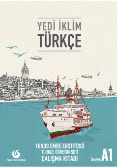

YİTurk tilini o'rganuvchilar uchun mo'ljallangan A1 darajasidagi amaliy mashqlar to'plami.
Ushbu kitob Yunus Emre Enstitüsü tomonidan turk tilini chet tili sifatida o'rganayotganlar uchun maxsus ishlab chiqilgan A1 darajasidagi ish daftaridir. Unda kundalik hayotda zarur bo'lgan grammatik qoidalar, so'z boyligini oshirish va to'rt asosiy til ko'nikmasini rivojlantirishga qaratilgan mashqlar jamlangan.